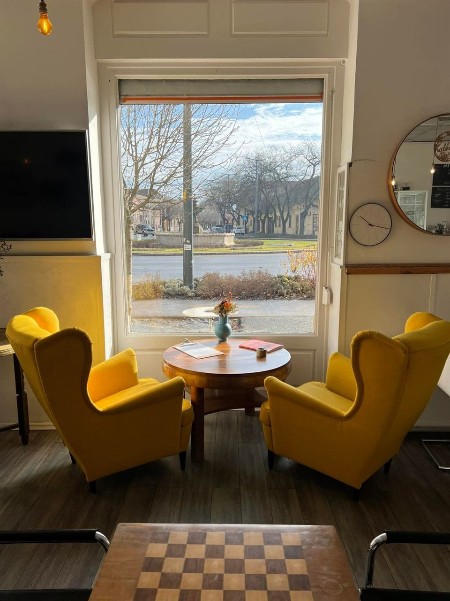
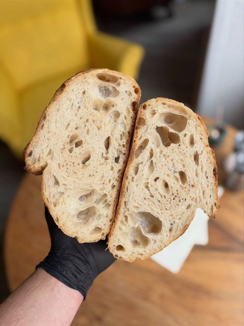
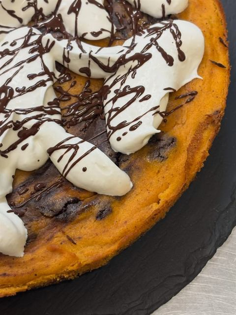
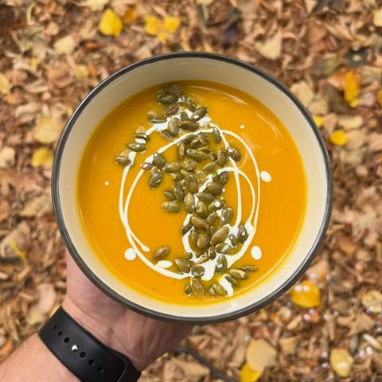

Ma a levesünk
Toszkán paradicsomleves
mini mozzarellával és rukkolával. Forró, fűszeres, tökéletes.
- gluténmentes
- mozzarella nélkül laktózmentes is

specialty kávé · reggeli · hétvégén brunch
Nyitvatartás: H–P 7–18, Szo–V 8–14
Ülj be a sárga fotelbe. A kutyád is jöhet.
Rólunk
A Kálvin téren vagyunk, a nevünk is innen jön: Kálvin + -ino, mint egy jó olasz kávé. Specialty kávé, reggeli, napi leves, saját sütik és kovászos kenyér, hétvégén pedig brunch, nem kell sietni. Ülj be a sárga fotelbe a nagy ablak elé, hozd a családot, a sakkpartnered vagy a kutyádat. Ha gluténmentesen vagy laktózmentesen eszel, szólj nyugodtan, figyelünk rá. Kutya, gyerek és mindenki barátja vagyunk :)


Gyere be
A Facebookon 12 véleményből 100% ajánl minket. Köszi! :)
